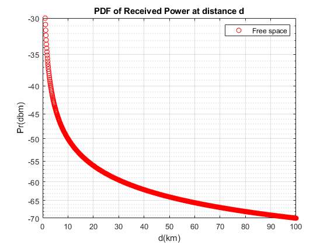
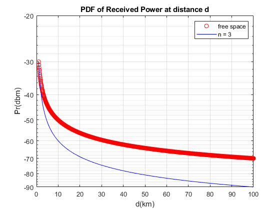
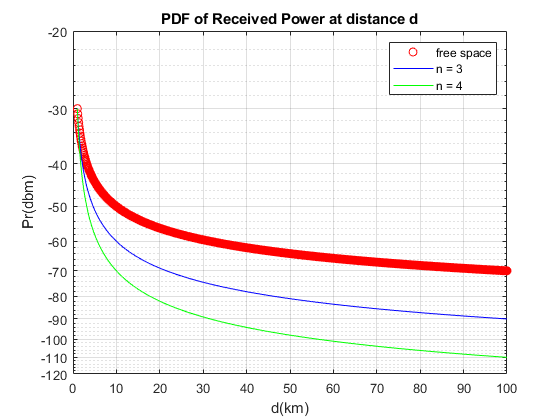
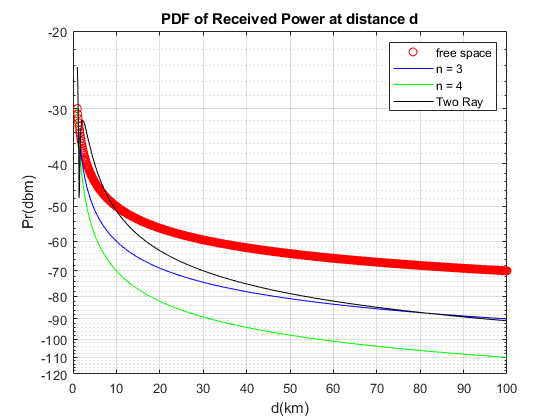
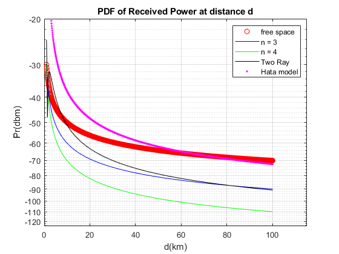

Contents
HW4
Teacher : Doctor_Mohammadi Author: [SeyedAli] - [SeyedHosseini] E-mail: [alishosseini79@aut.ac.ir]
%Student-Number : [9723042] % University: Amirkabir University of Technology
Q 4-23
clc;
close all;
clear;
Initialization Data
clc; Pr0 = 1e-6 ; % Received Power d0 = 1; % first distance d = 1 : 0.1 : 100 ; %Distance to Tx
Free path Loss Model
Pr = Pr0 * (d0./d).^2 ; % Received Power at any distance Prdbm = 10*log10(Pr) + 30; % Pr in dbm
Plotting
clc; figure(1) semilogy(d,Prdbm,'o r') title("PDF of Received Power at distance d") xlabel ('d(km)') ylabel('Pr(dbm)') grid on legend('Free space','Location','northeast') hold on;
n = 3
Pr3 = Pr0 * (d0./d).^3 ; % Received Power at any distance Prdbm3 = 10*log10(Pr3) + 30; % Pr in dbm
Plotting
figure(1) semilogy(d,Prdbm3,'b') title("PDF of Received Power at distance d") % xlabel ('d(km)') % ylabel('Pr(dbm)') grid on legend('free space','n = 3','Location','northeast') hold on; axis([0 100 -90 -20 ])
n = 4
Pr4 = Pr0 * (d0./d).^4 ; % Received Power at any distance Prdbm4 = 10*log10(Pr4) + 30; % Pr in dbm
Plotting
figure(1) semilogy(d,Prdbm4,'g') title("PDF of Received Power at distance d") xlabel ('d(km)') ylabel('Pr(dbm)') grid on legend('free space','n = 3','n = 4','Location','northeast') hold on; axis([0 100 -120 -20 ])
Two Ray Ground Reflection Exact Equation
Gt = 1;%transmitter gain Gr = 1;%receiver gain fc = 18e8; %Frequency ht = 40;%transmitter height hr = 3; %receiver height lambda = (3*1e8) / fc ; %Wavelength Pt = (Pr0*16*pi*pi*d0*d0*1e6)/... (1*1*lambda*lambda); % now theta = (4*pi*ht*hr)./(lambda.*d*1e3) ; %theta = theta*pi/180; PrTR_num = (Pt*Gt*Gr*(lambda)^2).*... 4.*(sin(theta./2).^2) ; PrTR_den = 16*1e6*pi*pi.*d.^2; PrTR = PrTR_num ./ PrTR_den ; %Power in TWO Ray PrdbmTR = 10*log10(PrTR) + 30; % Pr in dbm
Plotting
figure(1) semilogy(d,PrdbmTR,'- k') title("PDF of Received Power at distance d") xlabel ('d(km)') ylabel('Pr(dbm)') grid on legend('free space','n = 3','n = 4','Two Ray','Location','northeast') hold on; axis([0 100 -120 -20 ])
Hata Model
clc; alpha = 3.2*(log10(11.75*hr))^2 - 4.97 ; %alpha of hr Cm = 3; %large cities LossP = 46.3 + 33.9*log10(fc/1e6) - ... 13.82*log10(ht) - alpha + ... (44.9 - 6.55*log10(ht))*log10(d) + Cm ; Ref_Loss = LossP(50); Pr0dbm = 10*log10(Pr0/1e-3); PrHata = Pr0dbm - [LossP - Ref_Loss];
Plotting
figure(1) semilogy(d,PrHata,'. m') xlabel ('d(km)') ylabel('Pr(dbm)') title("PDF of Received Power at distance d") grid on legend('free space','n = 3','n = 4','Two Ray','Hata model','Location','northeast') hold on; axis([0 115 -125 -20 ])